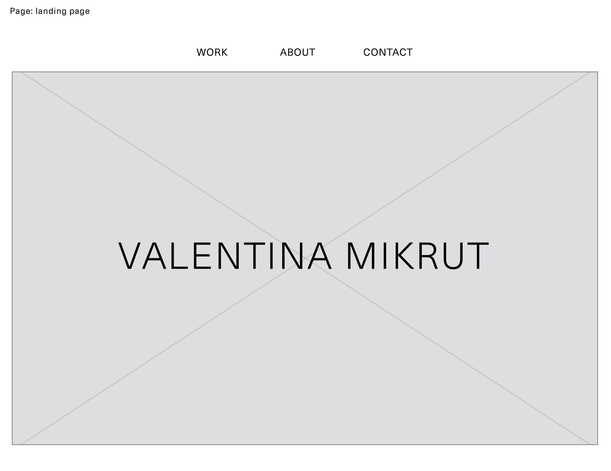
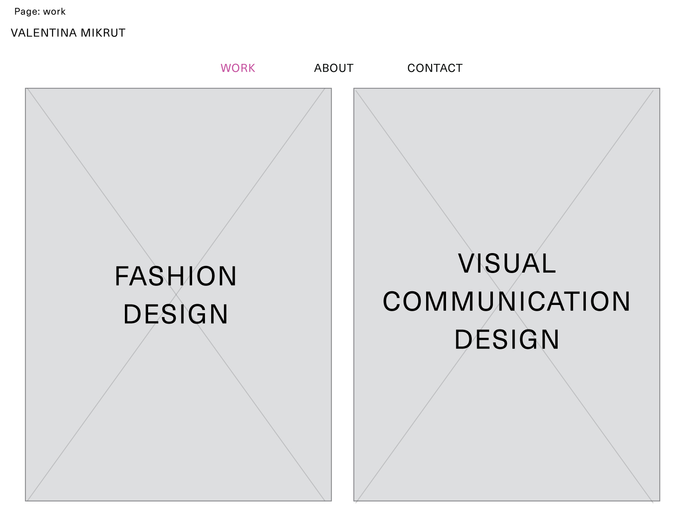
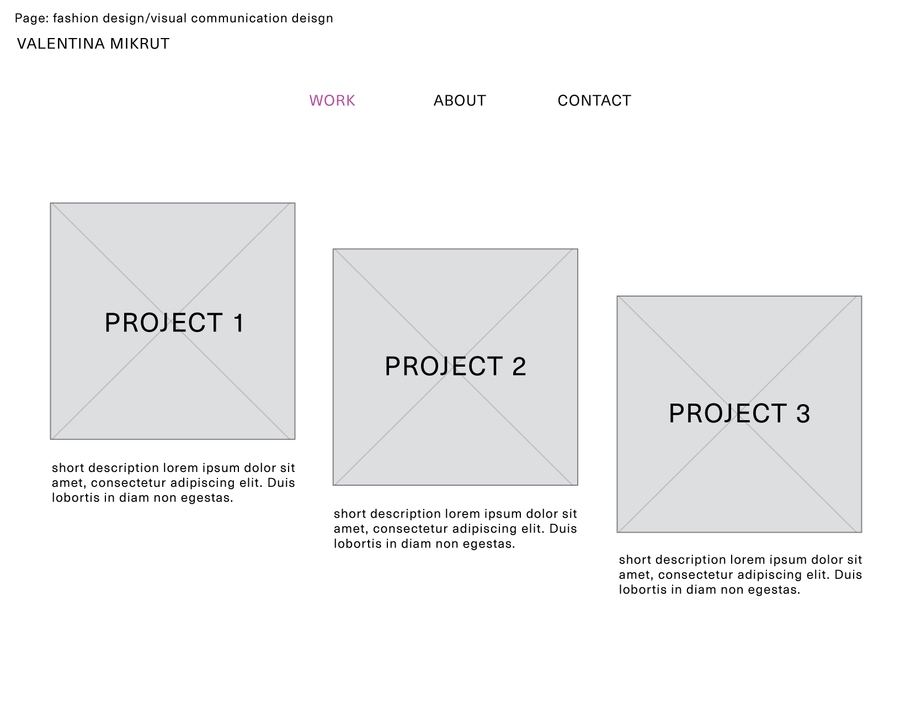
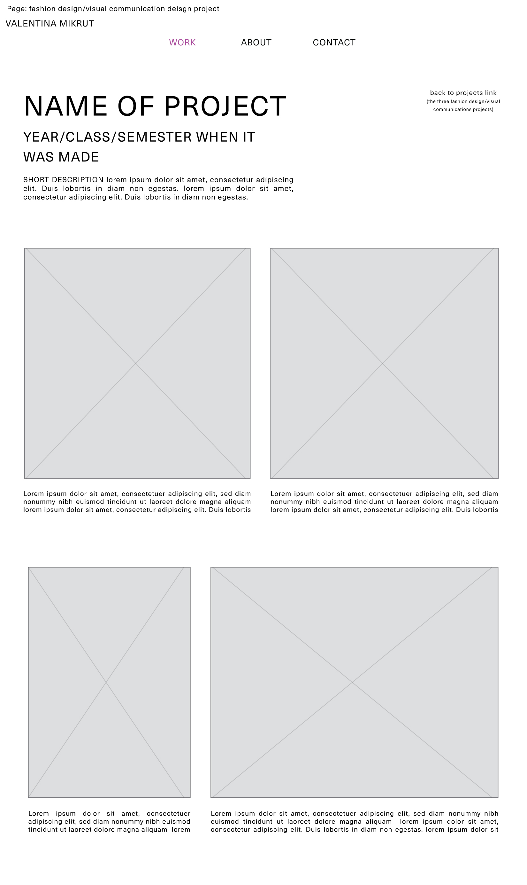
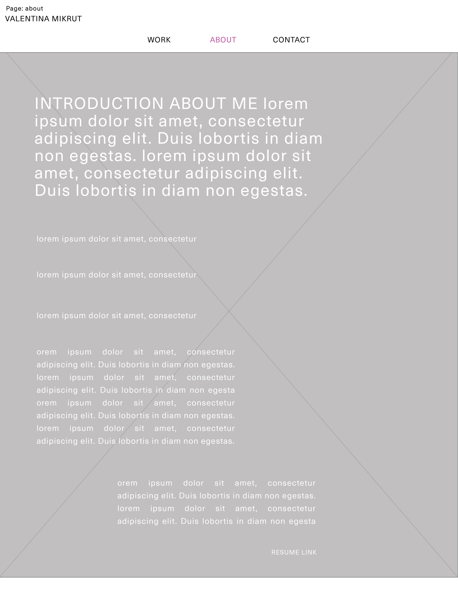
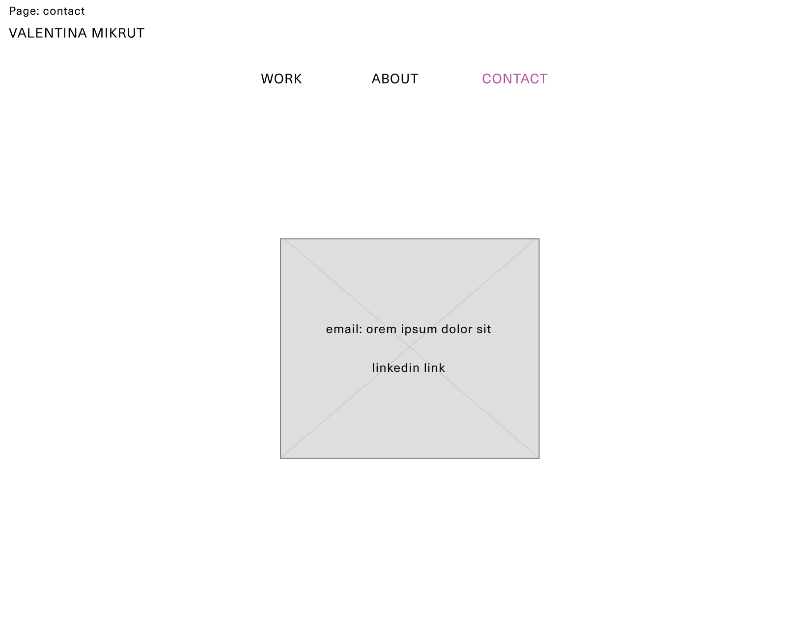

Website Layout
1. The landing page will allow the user to access the work, about and contact pages. If possible it would be good to be able to have rotating images on the landing page, otherwise one large still image/video is fine. My name is positioned at the top left of all of the other pages and will link back to this landing page.

2. The work page will allow the user to access my fashion design projects or my visual communication design projects.

3. Both the fashion design project page and the visual communication design project page will look like this, with three different projects that the user can click on.

4. Once the user chooses to click on a project on the previous page it will take them to this project page with more in-depth details about the project as well as images. The amount/size of the images might vary depending on the project but I would like there to always be two images next to each other as you scroll down with a short text explaining each of the images underneath them. From this page there will also be a 'back to projects' button to go back to the previous page where the user can choose to click on one of the three projects.

5. The about page will be text written on top of an image, if it is possible for it to be legible.

6. The contact page will consist of a small image with my contact details written on top of it.
